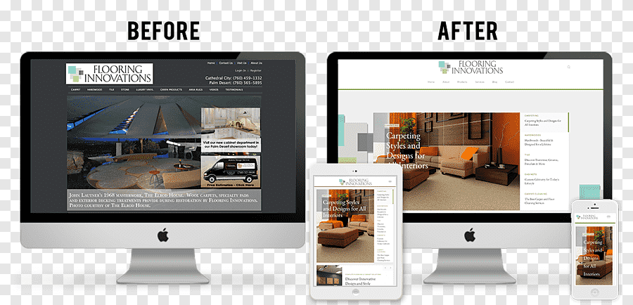
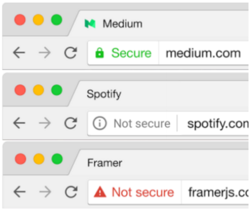

Las empresas suelen necesitar orientación sobre cómo implementar y optimizar sus recursos tecnológicos.
La consultoría tecnológica se enfoca en evaluar las necesidades de una empresa, identificar las mejores soluciones tecnológicas y ayudar en la toma de decisiones relacionadas con la infraestructura tecnológica.
Esto incluye recomendaciones sobre software, hardware, estrategias de digitalización, cloud computing, y mejoras de eficiencia mediante nuevas tecnologías.
La consultoría también involucra la evaluación de la infraestructura actual y la recomendación de herramientas que optimicen los procesos.
El desarrollo de software a medida se refiere a la creación de aplicaciones personalizadas para resolver necesidades específicas de un cliente.
En lugar de usar soluciones estándar, la empresa de tecnología diseña, desarrolla e implementa un sistema que se ajusta a las particularidades del negocio.
Estos proyectos pueden incluir sistemas de gestión empresarial (ERP), aplicaciones móviles, software de gestión de inventarios, plataformas de comercio electrónico, sistemas de gestión de clientes (CRM), y mucho más.
Se realiza un análisis detallado de los requerimientos para crear una solución completamente adaptada.
La infraestructura en la nube permite a las empresas almacenar, procesar y gestionar datos en servidores remotos, sin necesidad de invertir en costosos equipos locales.
Las empresas de soluciones tecnológicas ayudan a implementar infraestructuras en la nube basadas en servicios como Amazon Web Services (AWS), Microsoft Azure o Google Cloud.
Esto incluye la migración de sistemas locales a la nube, la creación de plataformas escalables y la optimización de costos operativos.
También se cubren aspectos como la gestión de bases de datos, almacenamiento y el uso de herramientas de colaboración en la nube.
La ciberseguridad es un área crítica que involucra la protección de sistemas informáticos, redes, dispositivos y datos frente a amenazas externas e internas.
Las empresas de soluciones tecnológicas proporcionan servicios como auditorías de seguridad, implementación de firewalls, protección contra malware, encriptación de datos, gestión de vulnerabilidades y formación en buenas prácticas de seguridad.
Este servicio es esencial para proteger la información sensible y evitar incidentes como el robo de datos, pérdidas financieras o daños a la reputación.
Una empresa financiera implementó nuestra solución en la nube, lo que permitió un acceso remoto eficiente a sus sistemas y redujo el costo de infraestructura en un 40%.
Desarrollamos un software a medida que ayudó a una tienda en línea a mejorar la gestión de inventarios y aumentar las ventas en un 30% mediante la automatización de procesos.
Implementamos una solución integral de ciberseguridad para una empresa de e-commerce, lo que evitó una brecha de datos y garantizó la confianza de sus clientes.
Desarrollamos soluciones tecnológicas personalizadas para empresas que necesitan un software único, adaptado específicamente a sus necesidades.
Nuestro objetivo es ofrecer productos que optimicen la eficiencia y escalabilidad de los negocios, a través de la implementación de las últimas tecnologías disponibles en el mercado.
Utilizamos las últimas tecnologías para garantizar que nuestras soluciones sean escalables, seguras y eficientes.
Garantizamos que nuestras soluciones se integren perfectamente con otras plataformas y herramientas que ya estés utilizando.